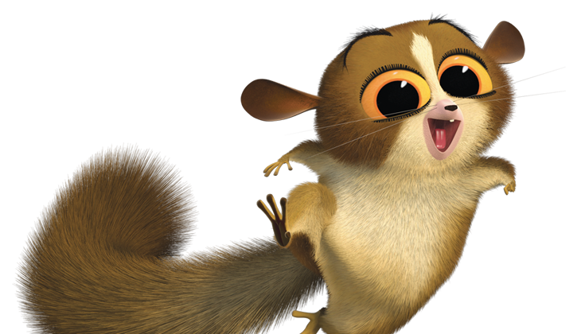
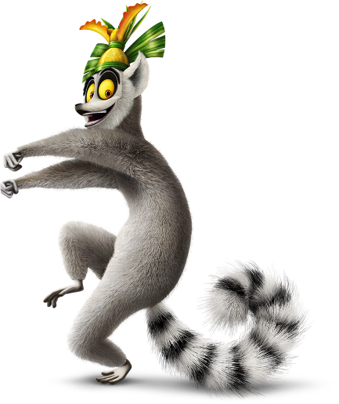
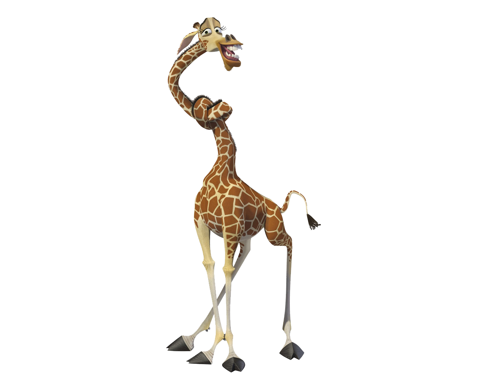
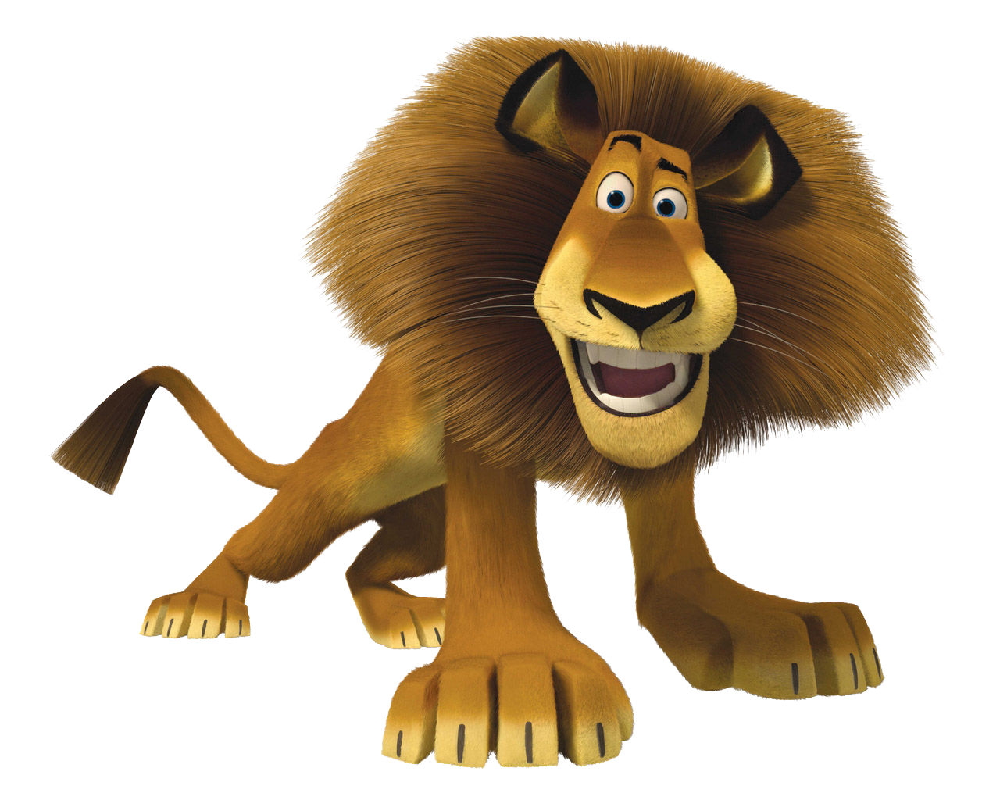
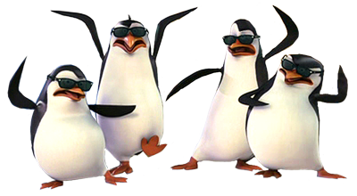
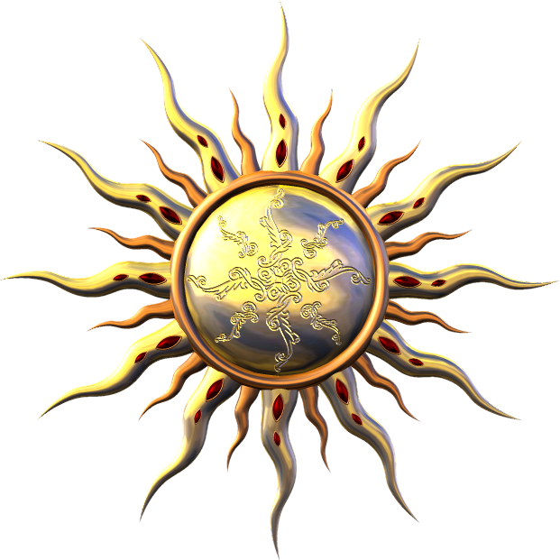

Madagascar
Index

The pygmy mouse lemur is the smallest primate in the world. Its head and body are less than two and a half inches (six centimeters) long,
though its tail is a bit more than twice that length.

Madagascar is world-famous for its lemurs—primates that look something like a cat crossed with a squirrel and a dog. These animals are unique to the
island and display a range of interesting behaviors from singing like a whale (the indri) to sashaying across the sand like a ballet dancer (the sifaka).

The West African giraffe, Niger giraffe or Nigerian giraffe is a subspecies of the Northern giraffe distinguished by its light colored spots,
which is found in the Sahel regions of West Africa. They can weigh up to 2,800 lbs and live in heard of 15. Currenlty there are only around 200 left in the world.

Lions are the only cats that live in groups, which are called prides.
Males defend the pride's territory, which may include some 100 square miles (259 square kilometers)
of grasslands, scrub, or open woodlands.

This intrepid bird was found in January, during the breeding season. Male penguins will travel long distances to get food while the females
incubate the eggs. Given that there are no other records of penguins in Madagascar (not real penguins anyway!), this was a pretty gutsy individual. And for now he
has the honor of being the only wild, non-animated penguin of Madagascar.
 Zebras are several species
of African equids united by their distinctive black and white striped coats. Their stripes come in different patterns,
unique to each individual. They are generally social animals that live in small harems to large herds.
Zebras are several species
of African equids united by their distinctive black and white striped coats. Their stripes come in different patterns,
unique to each individual. They are generally social animals that live in small harems to large herds.
 Of the 285 bird species recorded on Madagascar, 105 are found nowhere else on earth, and a handful of others are shared only with the
neighbouring Comoro Islands, one has been declared extinct.
Of the 285 bird species recorded on Madagascar, 105 are found nowhere else on earth, and a handful of others are shared only with the
neighbouring Comoro Islands, one has been declared extinct.

The sun is very hot. You can see all over the world. (But don't look at it(Unless you got some dope sunnies))